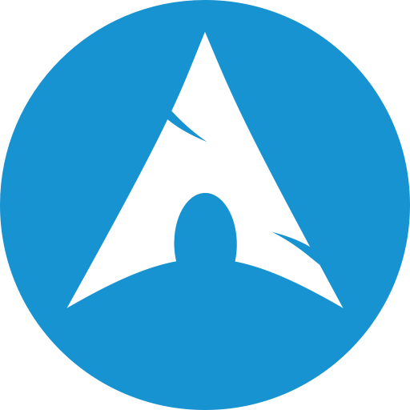
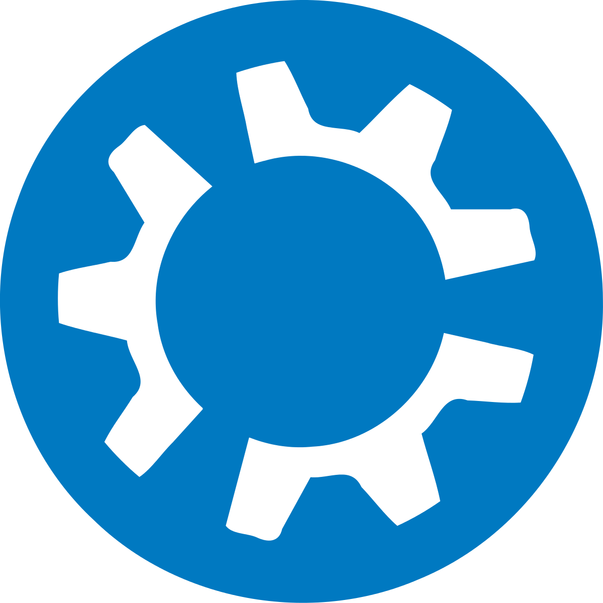
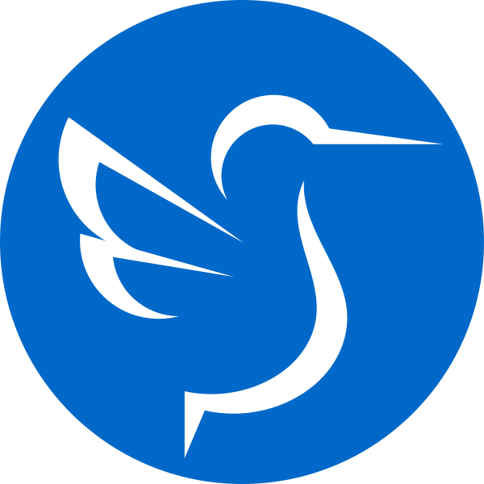
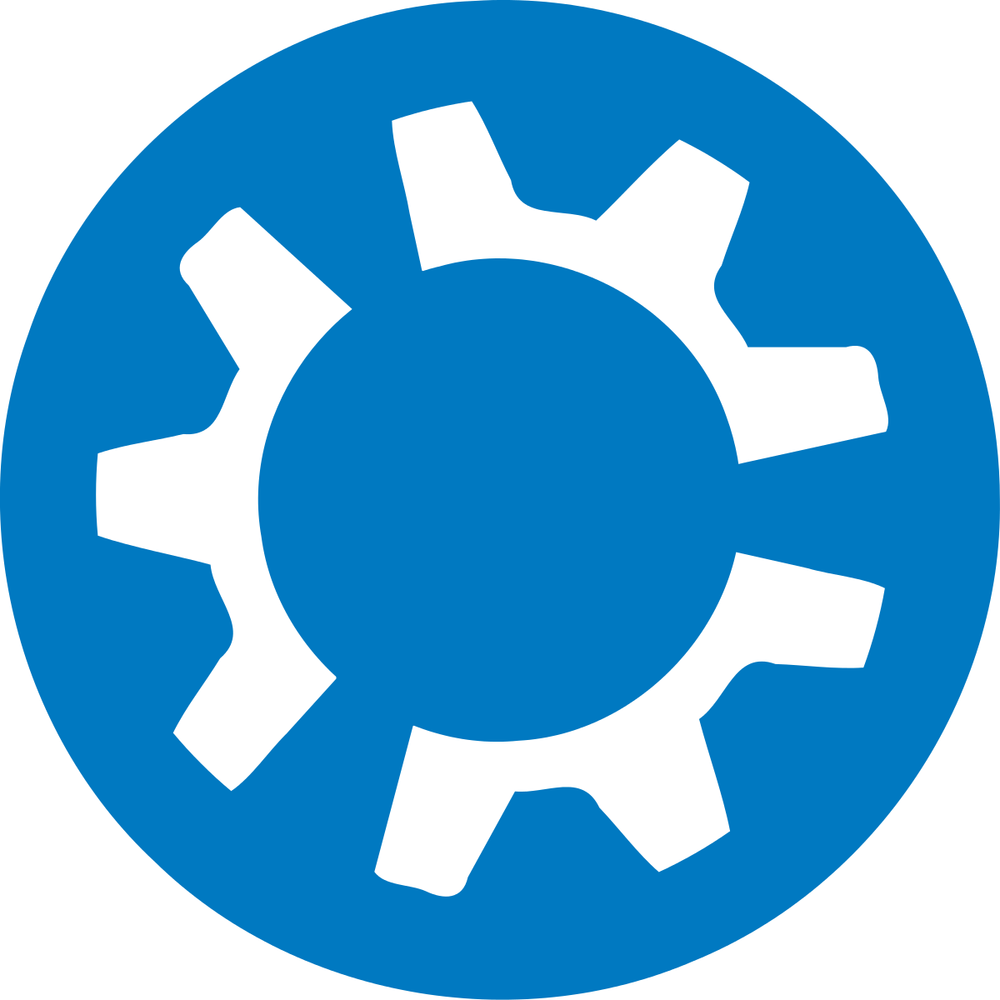
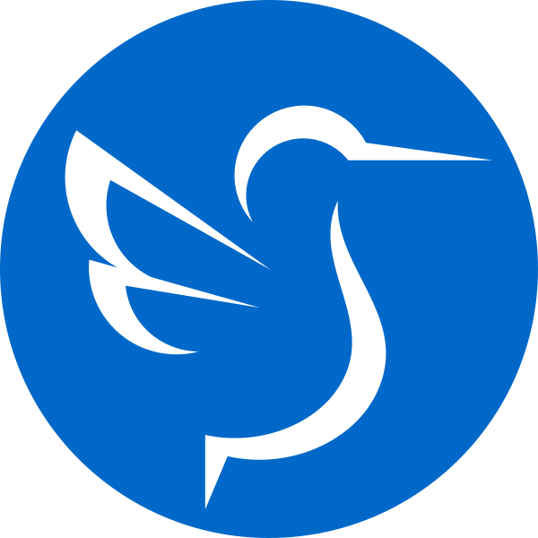
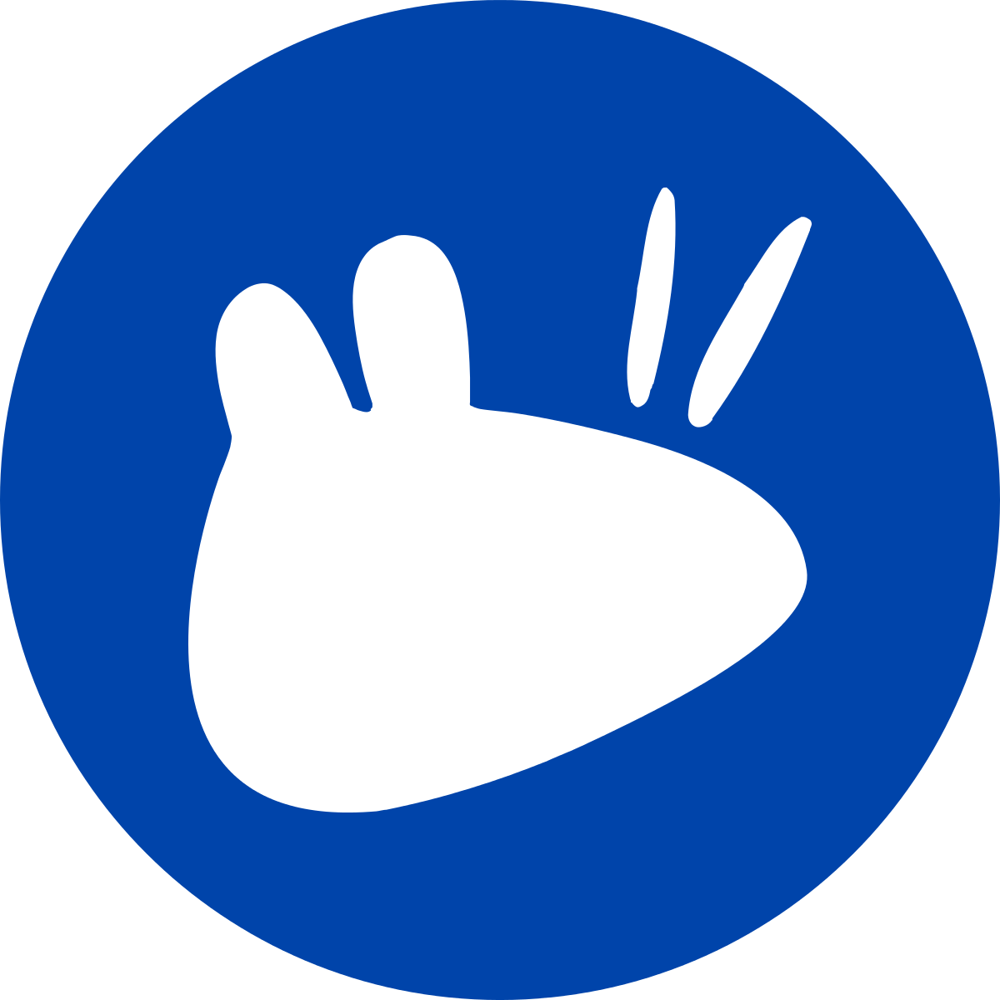
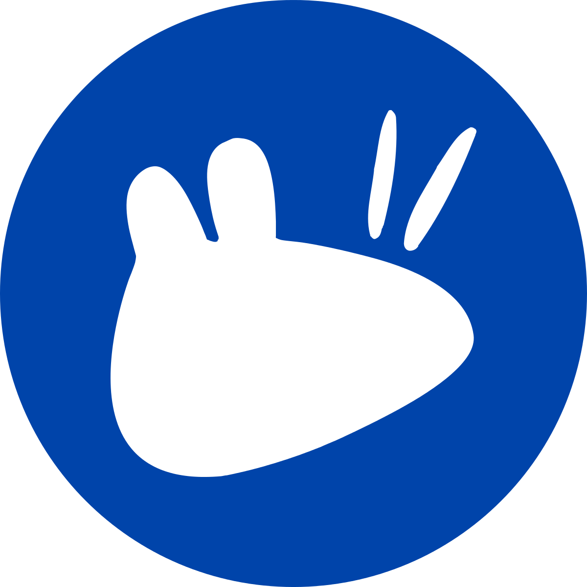

با ما آشنا شوید!



 




 

لاگ در زبان انگلیسی مخفف «گروه کاربران گنو/لینوکس» است. لاگها جوامع غیرانتفاعی و داوطلبانهای هستند که توسط علاقهمندان به حوزه نرمافزارهای آزاد/متنباز تشکیل میشوند و در راستای ترویج یا توسعهٔ آنها تلاش میکنند. شرکت در لاگها رایگان است.
در اکثر شهرهای ایران از جمله اهواز، تهران، اصفهان، تبریز، قزوین، مشهد، کرمان، شیراز، اراک، ایلام و... لاگها فعال هستند و به صورت مستقل از هم چه در محیطهای دانشجویی و چه در فضای غیروابسته مشغول فعالیت هستند.